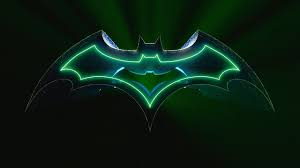

Batman (conocido inicialmente como Bat-Man y en español como el Hombre Murciélago) es un personaje de cómic creado por los estadounidenses Bob Kane y Bill Finger,13 y propiedad de DC Comics. Apareció por primera vez en la historia titulada «El caso del sindicato químico» de la revista Detective Comics N.º 27, lanzada por la editorial National Publications el 30 de marzo de 1939.
